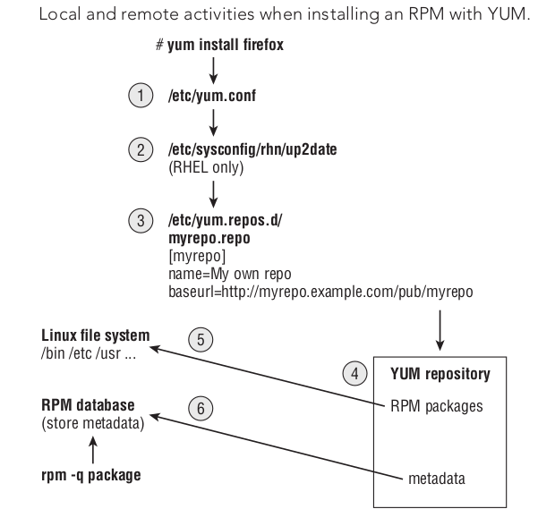

linux-bible
Table of Contents
- 1. DONE Part I: Getting Started
- 2. DONE Part II: Becomming a Linux Power User
- 3. Part III: Becoming a Linux System Administrator
- 4. Part IV: Becoming a Linux Server Administrator
1 DONE Part I: Getting Started
1.1 DONE Starting with Linux
You can't learn Linux without using it.
Linux is a computer operating system. An operating system consists of the software that manages your computer and lets you run applications on it.
1.2 DONE Creating the Perfect Linux Desktop
Extending the GNOME 3 destop
http://extensions.gnome.org
Managing shell extensions
Software –> Add-on –> Extension Setting
2 DONE Part II: Becomming a Linux Power User
2.1 DONE Using the Shell
On UNIX system, the program used to interpret and manage commands was referred to as the shell. The shell is command language interpreter.
2.1.1 About Shells and Terminal Windows
Three of the most common ways to get a shell interface in Linux:
- the shell prompt
- terminal window
- virtual console
- Using the shell prompt
If your Linux system has no graphical user interface, you will most likely see a shell prompt after you log in.
The default prompt for a regular user is a dollar sign: $ The default prompt for the root user is a pound sing (also called a hash mark): # In most Linux system, the $ and # prompts are preceded by your username, system name, and current directory name. [hack@chyson computer]$
- Using a terminal window
With the desktop GUI running, you can open a terminal emulator program to start a shell.
In Fedora, the default Terminal emulator window is the GNOME Terminal. GNOME Terminal supports many features beyond the basic shell. For example, cut, past, change font, set a title, choose colors...
- Using virtual consoles
Virtual consoles are a way to have multiple shell sessions open at once in addition to the graphical interface.
In Fedora, press Ctrl+Alt+F1 (or F2, F3, F4, F5, F6) to display one of several consoles. The first virtual workspace in Fedora is where the GUI is.
2.1.2 Choosing Your Shell
[hack@chyson books]$ whoami hack [hack@chyson books]$ grep hack /etc/passwd hack:x:1000:1000:Hack Chyson:/home/hack:/bin/bash
2.1.3 Running Commands
The characters and words you can type after a command are called options and arguments.
- Understanding command syntax
command [option] [argument]
Name Meaning command tell what to do option information to change the command's behavior augument information that tells the command what to act on
Most commands have one or more options you can add to change the command's behavior.
Options typically consist of a single letter, preceded by a hyphen. You can group single-letter options together or precede each with a hyphen, to use more than one option at a time.
EXAMPLES:
ls -l -a -l ls -lat
To tell a command to use a whole word as an option, you typically precede it with a double hyphen(–).
For example, –help, without the double hyphen, the letters h,e,l, and p would be interpreted as separate options.
Note: you can use the --help option with most commands to see the options and arguments that they support.
Many commands also accept arguments after certain options are entered or at the end of the entire command line.
An argument is an extra piece of information, such as a filename, directory, username, device, or other item that tells the command what to act on.
Sometimes, an argument is associated with an option. In that case, the argument must immediately follow the option.
With single-letter options, the argument typically follows after a space.
For full-word options, the argument often follows an equal sign(=).
EXAMPLES:
ls --hide=Desktop tar -cvf backup.tar /home/hack id # To find out information about your identity who -uH # see information about your current login session
[hack@iZj6c5dh77a6fzqwrfrmsgZ ~]$ who -uH NAME LINE TIME IDLE PID COMMENT hack pts/1 2018-06-15 18:54 . 24884 (221.192.178.29) the dot indicates that it is currently active. COMMENT show the name of the remote computer the user had logged in from.
- Locating commands
To find commands you type, the shell looks in what is referred to as your path. For commands that are not in your path, you can type the complete identity of the location of the command.
Typing the full path of the command is inconvenient.
The better way is to have commands stored in well-known directories and then add those directories to your shell's PATH environment variable. The path consists of a list of directories that are checked sequentially for the commands you enter. The path directory order is important. Directories are checked from left to right.
to see your current path:
echo $PATH
to make commands available to all users, add them to /usr/local/bin.
Linux does not, by default, check the current directory for an executable before searching the path.
It immediately begins searching the path, and executables in the current directory are run only if they are in the PATH variable or you give their absolute or relative address.
Not all the commands are located in directories in your PATH vairable. Some commands are built into the shell.
Other commands can be overridden by creating aliases that define any commands and options that you want the command to run.
The order in which the shell checks for the command:
- aliases
- shell reserved word (do, while, case, else)
- function
- built-in command
- filesystem command (These are the commands that are indicated by the value of the PATH variable.)
to find out where a particular command is taken from (if you are using a shell other than bash, use the which command):
type pwd
If a command resides in several locations, you can add the -a option to have all the known locations of the command printed.
type -a ls
If a command is not in your PATH variable, you can use the locate command to try to find it. The locate command looks all over your filesystem.
type which locate - aliases
2.1.4 Recalling Commands Using Command History
The shell history is a list of the commands that you have entered before.
- Command-line editing
By default, the bash uses command-line editing that is based on the emacs.
difference from emacs shortcuts:
C-v insert specical character C-u
cut beginning of line
cut text to the beginning
of the lineIf you prefer the vi command for editing shell command line, add the following line to the .bashrc file in your home directory:
set -o vi (Use a vi-style command line editing interface.)
set -o emacs (Use an emacs-style command line editing interface. This is the default)
- Command-line completion
To save you a few keystrokes, the bash shell offers several different ways of completing partially typed values.
To attempt a value, type the first few characters and press Tab.
the values you can type partially from a bash shell:
- command, alias, or function.
If the text you type begin with regular characters, the shell tries to completes the text with a command, alias, of function name.
- variable.
If the text you type begin with a dollar sign($), the shell tries to completes the text with a variable.
- username
If the text you type begin with a tilde(~), the shell tries to completes the text with a username.
As a result, ~username indicates the home directory of the named user.
- hostname
If the text you type begin with the at symbol(@), the shell tries to completes the text with a hostname taken from the /etc/hosts file.
Pressing Tab twice offers some wonderful possiblities.
- command, alias, or function.
- Command-line recall
After you type a command line, the entire command line is saved in your shell's history.
The list is stored in the current shell until you exit the shell.
After that, it is written to a history file, from which any command can be recalled to run again at your next session.
ways to run a command immediately:
- !n – Run command number.
- !! – Run previous command.
- !?string? – Run command containing string.
ways to recall a particular line and edit it: (I prefer this)
- C-n or C-p
- C-r (reverse incremental search)
- fc
Type fc followed by a history line number, and the command line is opened in a text editor (vi by default).
Make the changes that you want.
When you exit the editor, the command runs.
You can also give a range of line numbers (for example fc 100 105).
All the commands open in your text editor, and then run one after the other when you exit the editor.
clear history:
- setting HISTFILE to /dev/null
- leaving HISTSIZE blank
- kill a shell, not exiting a shell
- !n – Run command number.
2.1.5 Connecting and Expanding Commands
A truly powerful feature of the shell is the capability to redirect the input and output fo commands to and from other commands and files.
To allow commands to be strung together, the shell uses metacharacters.
A metacharacter is a typed character that has special meaning to the shell for connecting commands or requesting expansion.
Metacharacters include the pipe character(|), ampersand(&), semicolon(;), right parenthesis()), left parenthesis((), less than sign(<), and greater than sign(>).
- Piping between commands
The pipe (|) metacharacter connects the output from one command to the input of another command.
cat /etc/passwd | sort | less gunzip < /usr/share/man/man1/grep.1.gz | nroff -c -man | less
- Sequential commands
Sometimes, you may want a sequence of commands to run, with one command completing before the next command begins.
date; stroff -me verlargedocument | lpr; date ...; mail -s "Finished the long cammand" chris@example.com - Background commands
Sometimes, you may not want to tie up your shell waiting for command to finish.
In those cases, you can have the commands run in the background by using the ampersand(&).
troff -me verylargedocument | lpr & # Don't close the shell until the process is completed, or that kills the process.
- Expanding commands
With command substitution, you can have the output of a command interpreted by the shell instead of by the command itself.
The two forms of command substitution are $(command) and `command`.
vi $(find /home | grep zyzzy) # The vi command opens all filename for editing (one at a time) that include xyzzy. # This particular example is useful if you want to edit a file for which you know the name but not the location.
- Expanding arthmetic expressions
There are two form you can use to expand an arithmetic expression and pass it to the shell:
[expression] (expression)
- Expanding variables
Variables that store information within the shell can be expanded using the dollar sign($) metacharacter.
echo $PATH
2.1.6 Using Shell Variables
The shell itself stores information that may be useful to the user's shell session in what are called variables.
A subset of your local variables are referred to as environment variables. Environment variables are variables that are exported to any new shells opened from the current shell.
set # see all variables env # see environment variables declare # a list of the current enviroment variables
Common Shell Environment Variables
|
EUID |
the effective user ID number of the current user. |
|
FCEDIT |
If set, the text editor used by the fc command to edit the history commands. If not set, the vi command is used. |
| HISTFILE | location of your history file. |
| HISTFILESIZE | |
| HOME | home directory |
|
HOSTTYPE |
the computer architecture. For AMD 64-bit machines, the value is x86_64. |
| location of your mailbox file. | |
|
OLDPWD |
the directory that was the working directory before you changed to the current working directory. |
| OSTYPE | the current operating system. |
|
PATH |
the colon-seperated list of directories used to find commands that you type. |
|
PPID |
the process ID of the comand that started the current shell. |
|
PROMPT_COMMAND |
This can be set to a command name that is run each time before your shell prompt is displayed. |
| PS1 | This sets the value of your shell prompt |
|
PWD |
the directory that is assigned as your current directory. |
| RANDOM | random number between 0 and 99999. |
|
SECONDS |
the number of seconds since the time the shell was started. |
|
SHLVL |
the number of shell level associated with the current shell session. When you log in to the shell, the SHLVL is 1. Each time you start a new bash command, this number is incremented. |
|
TMOUT |
This can be set to a number representing the number of seconds the shell can be idle without receiving input. After the number of seconds is reached, the shell exit. |
2.1.7 Creating Your Shell Environment
You can tune your shell to help you work more efficiently.
- Configuring your shell (important and useful)
Bash Configuration Files
File Description /etc/profile
This sets up user environment for every user. It
is executed when you first log in./etc/bashrc
This executed for every user who runs the bash
shell, each time a bash shell is opened. Values in
this file can be overridden by information in each
user's ~/.bashrc file.~/.bash_profile
This is used by each user to enter information
that is specific to his or her use of the shell.
It is executed only once, when the user logs in.~/.bashrc
This contains the information that is specific to
your bash shells. It is read when you log in and
also each time you open a new bash shell../bash_logout This executes each time you log out. - Setting your prompt
Your prompt consists of a set of characters that appear each time the shell is ready to accept a command.
The PS1 environment variable sets what the prompt contains and is what you interact with most of the time.
man PS1 # /PS1 # search for PS1
- Adding environment variables
- TMOUT
This can be a nice security features, in case you leave your desk while you are still logged in to Linux.
- PATH
If you often use directories of commands that are not in your path, you can permanently add them.
- WHATEVER
You can create your own environment variable to provide shortcuts in your work.
- TMOUT
2.1.8 Getting Information about Commands
- PATH
- help
- –help
- info
- man
- Check the PATH (directory command)
echo $PATH # You see a list of the directories containing commands that are immediately accessible fo you.
- Use the help command (built-in command)
Some commands are built into the shell, so they do not appear in a directory.
help pwd # The help command lists those commands and shows options available with each of them.
- Use –help with the command (useage)
- Use the info command (hierachy of nodes)
- Use the man command (description)
Manual Page Sections
section number section name description 1
user commands
commands that can be run from the shell by
regular user.2
system call
programming functions used with an
application to make calls to the kernel3
c library
functionsprogramming functions that provides interface
to specific programming libraries.4
devices and
special filesfilesystem nodes that represent hardware
devices or software devices.5
file formats
and conventions
types of files(such as a graphic or word
processing file) or specific configuration
files(such as the passwd or group file)6 games games available on the system. 7
miscellaneous
overview of topics such as protocols,
filesystems, character set standard, and so
on.8
system
administration
tools and
daemonscommands that require root or other
administrative privileges to use.
man -k passwd man passwd man 5 passwd # Using the -k option, you can search the name and summary sections of all man pages.
2.2 DONE Moving around the Filesystem
The Linux filesystem is the structure in which all the information on your computer is stored.
One of the defining properties of the UNIX system is that nearly everything you need to identify on your system is represented by items in the filesystem.
If you were to map out the files and directories in Linux, it would look like an upside-down tree. At the top is the root directory, which is represented by a single slash(/).
| /bin | common linux user commands. |
|
/boot |
the bootable Linux kernel and boot loader configuration files. |
| /dev | files representing access points to devices. |
| /etc | administrative configuration files. |
|
/home |
directories assigned to each regular user with a login account. |
| /media | standard location for automatically devices. |
|
/lib |
shared libraries needed by applications in /bin ans /sbin to boot the system. |
|
/mnt |
a common mount point for many devices before it was supplanted by the standard /media directory. |
|
/misc |
a directory sometimes used to automount filesystems upon request. |
| /opt | to store add-on application software. |
| /proc | about system resources. |
| /root | the root user's home directory. |
| /sbin | administrative commands and daemon processes. |
| /tmp | temporary files used by applications. |
|
/usr |
Constains user documentation, games, graphical(X11), libraries, and a variety of other commands and files that are not needed during the boot process. The /usr directory is meant for files that don't change after installtion. |
|
/var |
Contains directories of data used by various applications. In particular, this is where you would place files that you share as an FTP server(/var/ftp) or a web server(/var/www). It also contains all system log files and spool files. |
2.2.1 Using Basic Filesystem Commands
cd # change directory pwd # print working directory mkdir # make directory chmod # change mode ls # list mv # move cp # copy rm # remove
| absolute path | begin with a slash(/) |
| tilde(~) | home directory |
| dot(.) | current directory |
| two dot(..) | the parent directory |
2.2.2 Using Metacharacters and Operators
In Linux, certain special characters, referred to as metacharacters and operators, help you to work with files more efficiently.
Metacharacters can help you match one or more files without completely typing each file name.
Operators enable you to direct information from one command or file to another command or file.
- Using file-matching metacharacters
- * – matching any number of characters
- ? – matching any one character
- […] – matching any one of the character between the brackets, which can include a hypen-separated range of letters or numbers
- * – matching any number of characters
- Using file-redirection metacharacters
< – directs the contents of a file to the command.
> – directs the standard output of a command to a file. If the file exists, the content of that file is overwritten.
2> – directs standard error to the file.
&> – directs both standard output and standard error to the file.
>> – directs the standard output of a command to a file, addding the output to the end of the existing file.
Another type of redirection, referred as "here document", enables you to type text that can be used as standard input for a command.
Here documents involve entering two less-than characters(<<) after a command, followed by a word.
All typing following that word is taken as user input until the word is repeated on a line by itself.
- Using brace expansion characters
By using curly braces({}), you can expand out a set of characters across filenames, directory name, or other arguments you give commands.
touch {a..f}{1..5}
2.2.3 Listing Files and Directories
EXAMPLE:
[hack@chyson ~]$ ls -al total 120 drwx------. 19 hack hack 4096 Jun 18 15:05 . drwxr-xr-x. 4 root root 4096 Jun 13 22:36 .. -rw-------. 1 hack hack 6231 Jun 18 14:42 .bash_history -rw-r--r--. 1 hack hack 18 Mar 15 21:56 .bash_logout -rw-r--r--. 1 hack hack 193 Mar 15 21:56 .bash_profile -rw-r--r--. 1 hack hack 231 Mar 15 21:56 .bashrc drwx------. 19 hack hack 4096 Jun 16 10:07 .cache drwx------. 17 hack hack 4096 Jun 16 10:18 .config drwxr-xr-x. 2 hack hack 4096 Jun 13 22:36 Desktop drwxr-xr-x. 2 hack hack 4096 Jun 13 22:36 Documents drwxr-xr-x. 2 hack hack 4096 Jun 16 11:19 Downloads -rw-rw-r--. 1 hack hack 593 Jun 18 07:53 .emacs -rw-rw-r--. 1 hack hack 624 Jun 18 07:52 .emacs~ drwx------. 3 hack hack 4096 Jun 13 23:19 .emacs.d -rw-------. 1 hack hack 16 Jun 13 22:36 .esd_auth drwxrwxr-x. 4 hack hack 4096 Jun 15 00:15 git -rw-rw-r--. 1 hack hack 124 Jun 13 23:21 .gitconfig -rw-------. 1 hack hack 2480 Jun 18 15:05 .ICEauthority -rw-------. 1 hack hack 54 Jun 18 13:37 .lesshst drwx------. 3 hack hack 4096 Jun 13 22:36 .local drwxr-xr-x. 6 hack hack 4096 Jun 13 23:11 .mozilla drwxr-xr-x. 2 hack hack 4096 Jun 13 22:36 Music drwxr-xr-x. 2 hack hack 4096 Jun 13 22:36 Pictures drwxrw----. 3 hack hack 4096 Jun 13 22:36 .pki drwxr-xr-x. 2 hack hack 4096 Jun 13 22:36 Public drwx------. 2 hack hack 4096 Jun 15 18:47 .ssh drwxr-xr-x. 2 hack hack 4096 Jun 13 22:36 Templates drwxrwxr-x. 2 hack hack 4096 Jun 18 13:29 test drwxr-xr-x. 2 hack hack 4096 Jun 13 22:36 Videos 12 3 4 5 6 7 8 The total line shows the total amount of disk space use by the files in the list(kilobytes). 1: file type A hyphen(-) indicates a regular file, d indicates a directory, l indicates a symbolic link b indicates a block device c indicates a character device s indicates a socket p indicates a named pipe 2: permission r means read, w means write, x means execute 3: the number of hard links 4: owner 5: groups 6: size in bytes 7: date and time each file was most recently modified time 8: filename
notes:
1. The directory size reflects the size of file containing information about the directory, it doesn't reflect the size of files contained in that directory. 2. On occasion, instead of seeing the execute bit(x) on an executable file, you may see an s in that spot instead. With an s appearing within either the owner(-rwsr-xr-x) or group(-rwxr-sr-x) permissions, or both(-rwsr-sr-x), the application can be run by any user, but ownership of the running process is assigned to the application's user/group instead of that of the user launching the command. This is referred to as set UID or set GID program, respectively. 3. If a t appears at the end of a directory, it indecates that the "sticky bit" is set for that directory. By setting the sticky bit on a directory, the directory's owner can allow other users and groups to add files to the directory, but prevent users from deleting each other's files in that directory. 4. If you see a plus sign at the end of the permission bits, it means that extended attributes, such as Access Control Lists(ACLs) or SELinux, are set on the file.
2.2.4 Understanding File Permissions and Ownership
| permission | file | directory |
|
read |
view what's in the file |
see what files and subdirectories it contains |
|
write |
change the file's content rename it, or delete it |
add files of subdirectories to the directory.remove files or directories from the directory |
|
execute |
run the file as a program |
change to the directory as the current directory, search through the directory, or execute a program from the directory.access file metadata of files in that directory. |
- Changing permissions with chmod(numbers)
# r=4, w=2, x=1 # absolute chmod 777 file # rwxrwxrwx
- Changing permissions with chmod(letters)
# user(u), group(g), other(o), all users(a) # read(r), write(w), execute(x) # plus(+), minus(-) # relative chmod a-w file chmod go-rwx file chmod ug+rx chmod -R o-w file
- Setting default file permission with umask
The default permission when you create a file or directory id determined by the value of umask. If you ignore the leading zero for the moment, the umask value masks what is considered to the fully opened permissions for a file 666 or a directory 777. The umask value of 002 results in permission for a directory of 775, That same umask results in a file permission of 644.(Execute permission are off by default for regular files)
To temporarily change your umask value, run the umask command.
umask 777 - Changing file ownership
$ chown hack /home/joe/memo.txt $ chown hack:hack /home/joe/memo.txt $ chown -R hack:hack /home/joe
2.3 DONE Working with Text Files
2.3.1 Using locate to find files by name
On Fedora, the updatedb command runs once per day to gather the names of files throughout your Linux system into a database. By running the locate command, you can search that database to find the location of files stored in that database.
advantages: 1. A locate command finds files faster because it searches a database instead of having to search the whole filesystem live. disadvantages: 1. cannot find any files added to the system since the previous time the database is created. 2. When you search for a string, the string can appear anywhere in a file's path.
2.3.2 Searching for files with find (important)
Nearly any file attribute you can think of can be used as a search option.
find # Run on a line by itself, the find command finds all files and directories below the current directory.
- Finding files by name
find /etc/ -name passwd find /etc/ -iname '*passwd*' # ignore case # The search is done by base name of the file; the directory names are not searched by default.
- Find files by size
find /usr/share -size +10M # larger find ~ -size -1M # smaller find /bigdata -size +500M -size -5G -exec du -sh {} \; # lager and smaller find . -size 0M # exact size
- Finding files by user
find /home -user hack -ls find /home -user chris -or -user joe -ls find /etc -group ntp -ls find /var/spool -not -user root -ls
- Finding files by permission
# You can find files based on number or letter permission along with the -perm options. # -perm mode File's permission bits are exactly mode (octal or symbolic). # -perm -mode All of the permission bits mode are set for the file. # -perm /mode Any of the permission bits mode are set for the file. find ~ -perm 755 -ls find ~ -perm -222 -type d -ls find /myreadonly -perm /222 -type f -ls find . -perm -002 -type f -ls
- Finding files by date and time
Metadata includes owner, group, timestamp, filesize, permissions, and other information stored in the file's inode.
find /etc -mmin -10 # changed in the past 10 minutes find /bin /usr/bin /sbin /usr/sbin -ctime -3 # changed in the past three days find /var/ftp /var/www -atime +300 # 300 days not accessed
- Using 'not' and 'or' when finding files
$ find /var/all \( -user joe -o -user chris \) -ls $ find /var/all -user joe -not -group joe -ls $ find /var/all -user joe -and -size +1M -ls
- Finding files and executing commands
# The -exec option executes the command on every file found, without stopping to ask if that's okay. # The -ok option stops at each matched file and ask whether you want to fun the command on it. # The set of curly braces indicates where on the command line to read in each file that is found. find [options] -exec command {} \; find [options] -ok command {} \; find /etc -iname profile -exec echo "I found {}" \; find /usr/share -size +5M -exec du {} \; | sort -nr find /var/allusers -user joe -ok mv {} /tmp/joe/ \;
2.3.3 Searching in files with grep (useful)
# -i: case insensitive # -v: reverse # -r: recursive # -l: just lists files that include the search text, without showing the actual lines of text. grep -rl linux /home/hack/notes/
2.4 DONE Managing Running Processes
Multitasking means that many programs can be running at the same time. An instance of a running program is referred to as a process.
2.4.1 Understanding Processes
A process is a running instance of program (or command). A process is identified on the system by what is referred to as a process ID. That process ID is unique for the current system.
Each process, when it is run, is associated with a particular user account and group account. That account information helps determine what system resources the process can access.
Commands that display information about running processes get most of that information from raw data stored in the /proc file system. Each process stores its information in a subdirectory of /proc, named after the process ID of that process.
2.4.2 Listing Processes
- Listing processes with ps
EXAMPLES:
[hack@chyson books]$ ps u | head USER PID %CPU %MEM VSZ RSS TTY STAT START TIME COMMAND hack 1663 0.0 0.0 518628 10740 tty2 Ssl+ 21:36 0:00 /usr/libexec/gdm-wayland-session gnome-session hack 1666 0.0 0.0 976156 14520 tty2 Sl+ 21:36 0:00 /usr/libexec/gnome-session-binary hack 1738 0.8 1.1 3949984 186904 tty2 Sl+ 21:36 0:45 /usr/bin/gnome-shell hack 1791 0.2 0.4 566408 69940 tty2 Sl+ 21:36 0:11 /usr/bin/Xwayland :0 -rootless -terminate -accessx -core -listen 4 -listen 5 -displayfd 6 hack 1833 0.2 0.0 561204 8640 tty2 Sl 21:36 0:15 ibus-daemon --xim --panel disable hack 1837 0.0 0.0 481968 6924 tty2 Sl 21:36 0:00 /usr/libexec/ibus-dconf hack 1838 0.0 0.1 623304 26176 tty2 Sl 21:36 0:02 /usr/libexec/ibus-extension-gtk3 hack 1842 0.1 0.1 612668 28904 tty2 Sl 21:36 0:07 /usr/libexec/ibus-x11 --kill-daemon hack 1921 0.0 0.1 1066972 32404 tty2 Sl+ 21:36 0:00 /usr/libexec/gsd-power # The u option asks that usernames be shown, as well as other information associated with the current user. STAT R indicating a currently running process and S representing a sleeping process. plus sign(+) indicates that the process is associated with the foreground operations. VSZ (virtual set size) shows the size of the image process (in kilobytes). the amount of memory allocated for the process. RSS (resident set size) shows the size of the program in memory. the amount that is acutally being used. physical memory that cannot be swapped. TIME the cumulative system time used.
ps ux | less # all the processes for the current user ps aux | less # all processes running for all users # Using the -o option, you can use keywords to indicate the columns you want to list with ps. # comm: full command line that war run # By default, output is sorted by process ID number. ps -eo pid,user,uid,group,gid,vsz,rss,comm | less # If you want to sort by a specific column, you can use the sort= option. # -rss: from the highest to the lowest. ps -eo pid,user,uid,group,gid,vsz,rss,comm --sort=-rss | less
- Listing and changing processes with top
EXAMPLE:
# With top, the default is to display processes based on how much cpu time they are currently consuming. [hack@chyson books]$ top top - 13:40:35 up 9 days, 6:01, 1 user, load average: 0.27, 0.30, 0.41 Tasks: 256 total, 1 running, 205 sleeping, 0 stopped, 0 zombie %Cpu(s): 14.5 us, 1.9 sy, 0.0 ni, 82.2 id, 0.0 wa, 0.0 hi, 1.4 si, 0.0 st KiB Mem : 32819832 total, 21742136 free, 2848716 used, 8228980 buff/cache KiB Swap: 2097148 total, 2097148 free, 0 used. 29040516 avail Mem PID USER PR NI VIRT RES SHR S %CPU %MEM TIME+ COMMAND 9349 hack 20 0 3584732 649016 341844 S 48.8 2.0 2:08.91 Web Content 1185 hack 20 0 4055480 457804 168616 S 4.7 1.4 81:39.31 gnome-shell 975 hack 20 0 626032 135668 107284 S 4.3 0.4 58:40.26 Xorg 9198 hack 20 0 3229716 342568 189080 S 4.3 1.0 1:19.75 firefox 22407 hack 20 0 832536 49868 33832 S 3.0 0.2 0:13.45 gnome-terminal- 7098 hack 20 0 6292332 966800 73148 S 2.3 2.9 10:26.10 java 10233 hack 20 0 51424 4160 3292 R 0.7 0.0 0:00.16 top 10456 hack 20 0 653108 46764 32884 S 0.7 0.1 40:46.39 gnome-system-mo 10 root 20 0 0 0 0 I 0.3 0.0 41:30.89 rcu_sched 489 root -2 0 0 0 0 S 0.3 0.0 0:11.74 i915/signal:0 1166 hack 20 0 226988 12888 6100 S 0.3 0.0 0:13.95 at-spi2-registr 1381 hack 20 0 679864 27540 20376 S 0.3 0.1 15:40.81 gsd-color 9032 root 20 0 0 0 0 I 0.3 0.0 0:08.85 kworker/1:0-eve 1 root 20 0 225776 9824 6932 S 0.0 0.0 0:53.98 systemd ---------------------------------------------------------------------------------------------------- us, user : time running un-niced user processes sy, system : time running kernel processes ni, nice : time running niced user processes id, idle : time spent in the kernel idle handler wa, IO-wait : time waiting for I/O completion hi : time spent servicing hardware interrupts si : time spent servicing software interrupts st : time stolen from this vm by the hypervisor h: to see help options M: to sort by memory usage P: to sort by CPU 1: to toggle showing CPU usage of all your CPUs R: to reverse sort your output u: enter a username to display processes only for a particular user Renicing a process: press r, enter the pid, enter a number(-19-20) Killing a process: press k, type 15 to terminate cleanly or 9 to just kill the process outright.
2.4.3 Managing Backgroud and Foreground Processes
To stop a running command and put it in the background, press Ctrl+z.
- Starting background processes
To check which commands you have running in the background, use the jobs command.
[hack@chyson tmp]$ jobs [1]- Running emacs linux-bible & (wd: ~/git/computer/books/linux-bible) [2]+ Stopped vi hello
The plus sign(+) shows that it was most recently placed in the background.
The minus sign(-) shows that it was placed in the background just before the most recent background job.
- Using foreground and background command
fg %1 # to refer to a background job, use a percent sign(%) followed by the job number.
% Refers to the most recent command put into the background. %string Refers to a job when the command begins with a particular string of characters. The string must be unambiguous. %?string Refers to a job where the command line contains a string at any point. The string must be unambiguous or the match fails. %- Refers to the previous job stopped before the most recently stopped. You can start a command again in background using the bg command.
2.4.4 Killing and Renicing Processes
The kill command can send a kill signal to any process and end it.
The nice and renice commands can be used to set or change the processor priority of a process.
- Killing processes with kill and killall
The kill and killall commands can actually be used to send any valid signal to a running process. The default signal is SIGNTERM.
man 7 signal Signal Value Action Comment ────────────────────────────────────────────────────────────────────── SIGHUP 1 Term Hangup detected on controlling terminal or death of controlling process SIGINT 2 Term Interrupt from keyboard SIGQUIT 3 Core Quit from keyboard SIGILL 4 Core Illegal Instruction SIGABRT 6 Core Abort signal from abort(3) SIGFPE 8 Core Floating-point exception SIGKILL 9 Term Kill signal SIGSEGV 11 Core Invalid memory reference SIGPIPE 13 Term Broken pipe: write to pipe with no readers; see pipe(7) SIGALRM 14 Term Timer signal from alarm(2) SIGTERM 15 Term Termination signalkill -9 12345 # The killall command can be particularly usefull if you want to kill a bunch of commands of the same name. killall -9 testme
- Setting processor priority with nice and renice
Every process running has a nice value between -20 and 19. By default, the nice value is set to 0.
The lower the nice value, the more access to the CPUs the process has. A regular user can set nice values only from 0 to 19. A regular user can set the nice value higher, not lower. A regular user can set the nice value only on the user's own processes. The root user can set the nice value on any process to any value.
nice -n 5 udatedb & renice -n -5 <pid>
2.5 DONE Writing Simple Shell Scripts
A shell script is a group of commands, functions, variables, or just about anything else you can use from a shell. These items are typed into a plain text file. That file can then be run as a command.
2.5.1 Executing and debugging shell scripts
The advantage of shell scripts is that they can be opened in any text editor to see what they do.
The disadvantage is that large or complex shell scripts often execute more slowly than compiled programs.
how to execute a shell scripts:
- the filename is used as an argument to the shell.
- by typing the name of the script on the command line.
sh git.sh ./git.sh # Anything following the name of the script is referred to as a command-line argument.
tips:
- echo to see what will be executed.
- bash -x myscript to display each command that is executed.
- keep the logic of your code clean and easy to follow.
2.5.2 Understanding shell variables
(store information for reuse) (saving labor)
Often within a shell script, you want to reuse certain items of information.
Variable names within shell scripts are case-sensitive and can be defined in the following manner:
NAME=value
Characters such as dollar sign ($), backtick (`), asterisk (*), exclamation point (!), and others have special meaning to the shell.
If you want to have the shell interpret a single character literally, precede it with a backslash (\). To have a whole set of characters interpreted literally, surround those characters with single quotes (').
Surround a set of text with double quotes if you want all but a few characters used literally.
For example, with text surrounded with double quotes, dollar signs ($), backticks (`), and exclamation points (!) are interpreted specially, but other characters (such as an asterisk) are not.
- Special shell position parameters
positional parameters or command line arguments: $0, $1, $2, $3...$n $0: the name of the script $1...$n: the parameters passed on the command line, in the order they appeared $#: how many parameters $@: holds all the arguments $?: the exit status of the last command executed
- Reading in parameters
Using the read command, you can prompt the user for information, and store that information to use later in your script.
example:
#!/bin/bash read -p "Type in an adjective, noun and verb (past tense): " a1 n1 v1 echo "He sighed and $v1 to the elixir. Then he ate the $a1 $n1."
- Parameter expansion in bash
If you want the value of a variable, you precede it with a $ (for example, $CITY). This is really just shorthand for the notation ${CITY}; Curly braces are used when the value of the parameter needs to be placed next to other text without a space.
■ ${var:-value}—If variable is unset or empty, expand this to value. ■ ${var#pattern}—Chop the shortest match for pattern from the front of var’s value. ■ ${var##pattern}—Chop the longest match for pattern from the front of var’s value. ■ ${var%pattern}—Chop the shortest match for pattern from the end of var’s value. ■ ${var%%pattern}—Chop the longest match for pattern from the end of var’s value. ■ ${var:m:n} -- from the m index, get the n length string. ■ ${var:m} -- from the m index, till the end. ■ ${var:0-m,n} from the left m index, get the n length string.
2.5.3 Performing arithmetic in shell scripts
Bash uses untyped variables, meaning it normally treats variables as string or text, but can change them on the fly if you want to.
Unless you tell it otherwise with declare, your variables are just a bunch of letters to bash.
But when you start trying to do arithmetic with them, bash converts them to integers if it can.
example:
BIGNUM=1024 let RESULT=$BIGNUM/16 #64 RESULT=`expr $BIGNUM / 16` #64
The let command insists on no spaces between each operand and the mathematical operator.
The syntax of the expr command requires whitespace between each operand and its operator.
2.5.4 Using programming construct in shell scripts
- The "if..then" statements
The = works best for comparing string values, while -eq is often better for comparing numbers.
Keep in mind that it's good practice to put strings in double quotes.
$ help test # import help message
syntax:
if [ test ]; then body elif [ test ]; then body else body fi
# special shorthand method of performing tests for simple one-command actions. [ test ] || action # if the test is false, then act [ test ] && {action} # if the test is true, then act # one-line if-then-else statement: [ test ] && action1 || action2
- The case command
case "VAR" in Result1) { body };; Result2) { body };; *) { body };; esacexample:
case `date +%a` in "Mon") BACKUP=/home/hack/data0 ;; "Tue" | "Thu") BACKUP=/home/hack/data1 ;; "Wed" | "Fri") BACKUP=/home/hack/data2 ;; *) BACKUP=/dev/null ;; esac - The "for..do" loop
for VAR in LIST do {body} doneexample:
for NUMBER in 0 1 2 3 4 5 6 7 8 9 do echo "The number is $NUMBER" done
- The "while..do" and "until..do" loops
while condition do {body} done until condition do {body} done
2.5.5 Trying some useful text manipulation programs
- The general regular expression parser (grep)
# grep: General Regular Expression Parser grep /home /etc/passwd # display a list of all regular user accounts:
Gaining expertise with regular expressions is quite a challenge, but after you master it, you can accomplish many useful things with just the simplest forms.
- Remove sections of lines of text (cut)
[hack@chyson books]$ grep /home /etc/passwd | cut -d ':' -f 6 - /home/hack [hack@chyson books]$ grep /home /etc/passwd hack:x:1000:1000:Hack Chyson:/home/hack:/bin/bash # -d ':' : delimited by a colon # -f 6 : display the sixth field # - : to read from standard input
- Translate or delete characters (tr)
The tr command is a character-based translator that can be used to replace one character or set of characters with another or remove of a character from a line of text.
FOO="Mixed UPpEr aNd LoWeR cAsE" echo $FOO | tr [A-Z] [a-z] # mixed upper and lower case # rename any tabs or spaces in the filenames to underscores. for file in *; do f=`echo $file | tr [:blank:] [_]` [ "$file" = "$f" ] || mv -i -- "$file" "$f" done
- The stream editor (sed)
example:
sed 's/Mac/Linux/g' somefile.txt > fixed_file.txt cat somefile.txt | sed 's/ *$//' > fixed_file.txt # replaces extra blank spaces at the end of each line with nothing.
3 Part III: Becoming a Linux System Administrator
3.1 DONE Leaning System Administration
3.1.1 Understanding System Administrator
The person assigned to manage all of a Linux system's resources is called system administrator.
Tasks that can be done by only the root user tend to be those that affect the system as a whole or impact the security or health of the system.
3.1.2 Exploring Administrative Commands, Configuration Files, and Log Files
- Administrative commands
/sbin /usr/sbin
To find commands intended primarily for the system administrator, check out the section 8 manual pages (usually in /usr/share/man/man8)
- Administrative configuration files
The two major locations of configuration files are your home dirctory and the /etc directory.
- Administrative log files and systemd journal
journalctl rsyslogd
3.1.3 Checking and Configuring Hardware
- Checking your hardware
ways to show kernel boot message:
- dmesg
- /var/log/dmesg
- journalctl
ls<Tab><Tab>
lspci (peripheral component interconnect)
lsusb
- dmesg
- Managing removable hardware
Udev (using udevd daemon) creates and removes devices (/dev directory) as hardware is added and removed from the computer.
The Hardware Abstraction Layer(HAL) provides the overall platform for discovering and configuring hardware.
- Working with loadable modules
Kernel modules are installed in /lib/modules sudirectories.
Goals Commands listing loaded modules lsmod, modinfo -d <module> loading modules modprobe removing modules rmmod
3.2 DONE Getting and Managing Software
3.2.1 Understanding RPM (Redhat Package Manager)
RPM is originally named Red Hat Package Manager but later recursively renamed RPM Package Manager. The rpm command was the first tool to manage RPMs, but later yum was added to enhance the RPM facility.
An RPM package is consolidation of files needed to provide a feature. Inside an RPM can be the commands, configuration files, and documentation that make up the software feature. An RPM file also contains metadata that stores information about the contents of that package, where the package came from, what it needs to run, and other information.
rpm -q emacs # query emacs-24.3-20.el7_4.x86_64 emacs: basename of the package 24.3: release number, assigned by the upstream producer 20: version number, assigned by the packager, Red Hat, each time the package is rebuilt at the same release number el7_4: operating system x86_64: architecture
3.2.2 Managing RPM Package with YUM
yum: Yellowdog Updater Modified
syntax:
yum [option] command

common yum command:
yum search <package> yum info <package> yum provides <package> yum list <package> yum list available yum list installed yum list all yum deplist <package> yum install <package> yum reinstall <package> yum erase <package> yum history yum history info 87 yum history undo 87 yum check-update yum update yum update <package> yum grouplist yum groupinfo <package> yum groupinstall <package> yum groupremove <package> yum clean packages yum clean metadata yum clean all yum check yumdownloarder <package> yum --help man yum info yum
3.2.3 Installing, Querying, and Verifying Software with the rpm Command
man rpm info rpm
3.3 Managing User Accounts
3.3.1 Creating User Accounts
- Adding users with useradd
The only required parameter is the login name of the user, but you can include some additional information ahead of it.
EXAMPLE:
useradd -c "Sara Green" sara
useradd -g users -G wheel,apache -s /bin/tcsh -c "Sara Green" sara
passwd sara
In creating the account for Sara, the useradd command performs several actions:
- reads the /etc/login.defs and /etc/default/useradd files to get default values (default value)
- checks command-line parameters to find out which default value to override (override)
- creates a new user entry in the /etc/passwd and /etc/shadow files (user entry)
- creates any new group entries in the /etc/group file (group entry)
- creates a home directory (home)
- copies any files located within the /etc/skel directory to the new home directory (skeleton)
/etc/passwd
/etc/shadow
/etc/group
- reads the /etc/login.defs and /etc/default/useradd files to get default values (default value)
- Setting user defaults
/etc/login.defs
/etc/default
/etc/default/useradd (or user command: useradd -D)
- Modifying users with usermod
EXAMPLE:
usermod -s /bin/csh chris
usermod -aG sales,marketing chris
- Deleting users with userdel
EXAMPLE:
userdel -r chris
userdel chris
3.3.2 Understanding Group Accounts
groupadd
groupmod
groupdel
(group<Tab><Tab>)
3.3.3 ACL
acl: access control list
getfacl: get file acl
setfacl: set file acl
Setting default ACLs on a directory enables your ACLs to be inherited.
3.3.4 Adding directories for users to collaborate
| name | numeric value | letter value |
| set uuser id bit | 4 | u+s |
| set group id bit | 2 | g+s |
| sticky bit | 1 | o+t |
3.4 Managing Disks and Filesystems
4 Part IV: Becoming a Linux Server Administrator
4.1 Understanding Server Administration
Most servers serve up data to remote clients, but others serve the local system.
Many servers are represented by processes that run continuously in the background and respond to requests that come to them.
These processes are referred to as daemon processes.
4.1.1 Starting with Server Administration
- Step 1: install the server
server package logging rsyslogd print cups web httpd ftp vsftpd windows file samba nfs nfs-utils mail postfix directory krb5-server, openldap-servers, ypserv dns bind network time protocol ntpd sql
postgresql, postgresql-server, mysql,
mysql-server, mariadb - Step 2: configure the server
/etc
- Step 3: start the server
Daemon configuration files: /etc/sysconfig
Its job is often just pass arguments to the server process itself, rather than configure the service.
- Step 4: Secure the server
- password protection
A good technique is to disallow direct login by root.
- firewall
- tcp wrapper
/etc/hosts.allow
/etc/hosts.deny
- selinux
- security settings in configuration files
- password protection
- Step 5: monitor the server
- logging (rsyslogd)
- system activity reports (sysstat)
- check the filesystem for signs of crackers (rpm -V)
- logging (rsyslogd)
4.1.2 Managing Remote Access with the Secure Shell Service
With Secure Shell tools, both the authentication process and all communications that follow are encrypted.
packages: openssh, openssh-clients, openssh-server
- using ssh client tools
ssh, scp, rsync, sftp
- remote login
ssh <username>@<ip>
If this is the very first time you have logged in to that remote system, the system asks you to confirm that you want to connect.
When you type yes to continue, you accept the remote host's public key.
At that point, the remote host's public key is downloaded to the client in the client's ~/.ssh/known_hosts file.
Now, data exchanged between these two systems can be encrypted and decrypted using RSA asymmectric encryption.
Your server's public key and private key are stored in the /etc/ssh directory.
- remote execution
ssh <username>@<ip> "<command>"
ssh -X localhost gedit
ssh -X localhost
gedit &
- copying (backup)
scp rsync (ideal for backup) attributes lost kept symbolic lost kept (with -l) copy repeated repeat no repeat
- remote login
- Using key-based (passwordless) authentication
ssh-copy-id [-i ~/.ssh/id_rsa.pub] hack@chyson.net
copy the ~/.ssh/id_rsa.pub into the chyson.net's ~/.ssh/authorized_keys
the remote ssh service compares the public key and the private key and allows you access if the two keys match.
4.1.3 Configuring System Logging
- rsyslog
package: rsyslog
config: /etc/rsyslog.conf
$ModLoad imuxsock # include module uxsock
*.info;mail.none;authpriv.none;cron.none /var/log/messages
(service.level location)/var/log/messages default format:
Sep 11 13:07:48 chyson dbus1: [system] Successfully activated service 'org.freedesktop.problems'
date_and_time
name_of_the_computer
program_or_service_name
process_number
message
- logwatch
package: logwatch
config: /etc/cron.daily/0logwatch
/etc/logwatch/conf/logwatch.conf
/usr/share/logwatch/defaut.conf/logwatch.conf
4.2 Administrating Networking
three ways:
- graphical interface
- menu-base commands (nmtui, network manager text user interface)
- edit networking configuration files
4.2.1 networking configuration files
/etc/sysconfig/network-scripts
/etc
If you edit these files directly, you should consider turning off the NetworkManager service and turning on the network service.
The reason for doing this is that NetworkManager sometimes overwrites files you configure manually.
description:
/usr/share/doc/initscripts*/sysconfig.txt
- network interface files
Configuration files for each wired, wireless, ISDN, dialup, or other type of network interface are represented by files in the /etc/sysconfig/network-scripts directory that begin with ifcfg-<interface>.
- other networking files
/etc/sysconfig/network
System-wide settings associated with your
local networking can be included in it./etc/hostname system's hostname /etc/hosts translating hostnames to ip addresses /etc/resolv.conf DNS servers and search domains /etc/nsswitch.conf hostname resolution commands to query DNS servers:
host redhat.com
dig redhat.com
command: getent (get entry)
It can be used to query any information setup in the nsswitch.conf file.
4.2.2 Setting alias network interface
one network interface car listening on multiple IP address.
modify ifcfg-<interface> file:
IPADDR=192.168.122.191
PREFIX=24
IPADDR1=192.168.122.192
PREFIX2=24
4.2.3 Setting up Ethernet channel bonding
more than one network interface card associated with a single IP address.
command: modinfo bonding
example:
/etc/sysconfig/network-scripts/ifcfg-bond0
DEVICE=bond0
ONBOOT=yes
IPADDR=192.168.0.50
NETMASK=255.255.255.0
BOOTPROTO=none
BONDING_OPTS="mode=active-backup"
/etc/sysconfig/network-scripts/ifcfg-eth0
DEVICE=eth0
master=bond0
SLAVE=yes
BOOTPROTO=none
ONBOOT=yes
/etc/sysconfig/network-scripts/ifcfg-eth1
DEVICE=eth1
master=bond0
SLAVE=yes
BOOTPROTO=none
ONBOOT=yes
/etc/modprobe.d/bonding.conf
alias bond0 bonding
4.2.4 Setting custom routes
/etc/sysconfig/network-scripts/route-eth0
ADDRESS0=192.168.99.0
NETMASK0=255.255.255.0
GATEWAY0=192.168.0.5
command: route (package: net-tools)
4.2.5 proxy server
package: squid
Footnotes:
DEFINITION NOT FOUND.